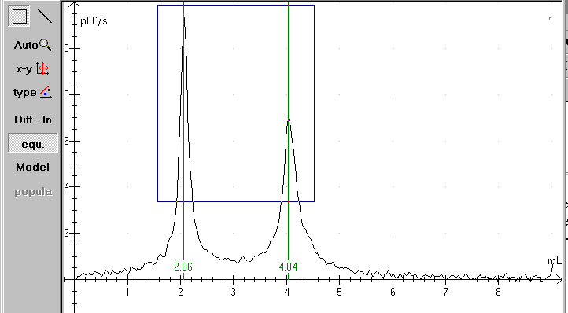
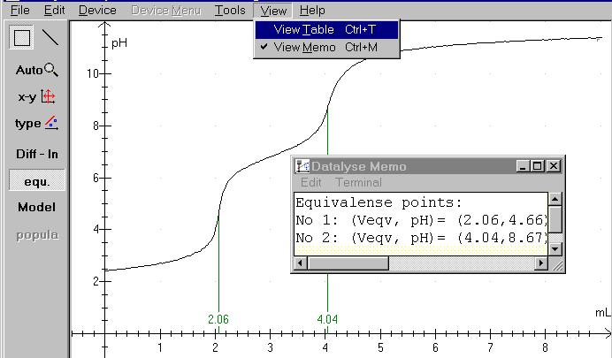
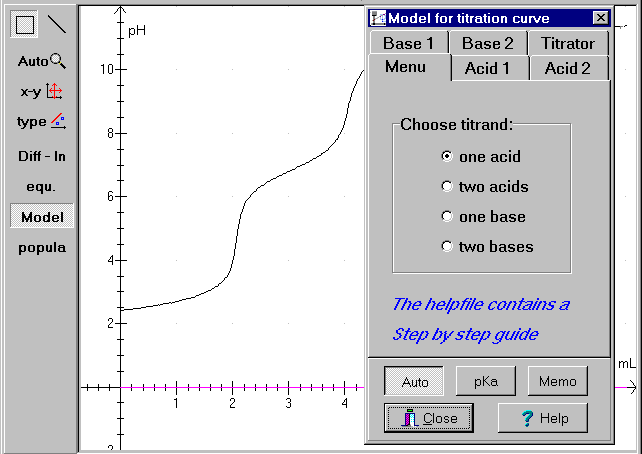
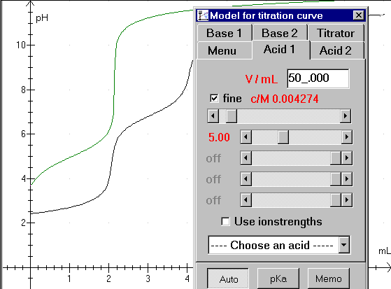
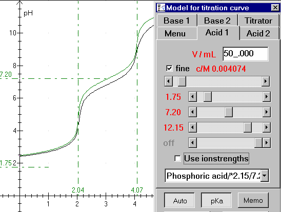
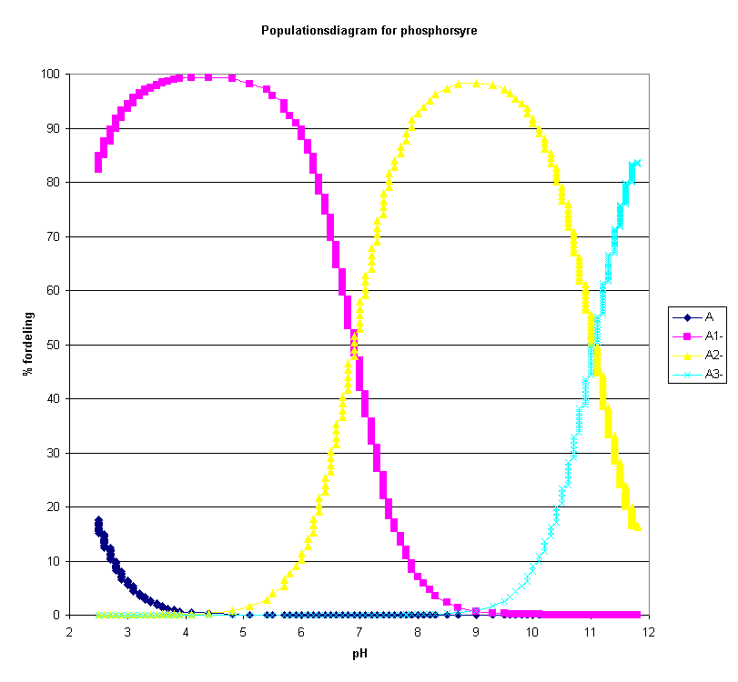

A DMI-24 multimeter from IMPO is used to measure the pH-values. Only one buffer, 4.01, is used to calibrate the meter. (It is better to use 2 or 3 buffers.) With the help of a peristaltic pump 0.00129 mL NaOH is added pr. second. The X-axis in Datalyse is automatically calibrated by this factor. The acid volume is 50,0 mL

The panel to the left contains buttons to handle the measurements.
Diff – ln: Is short for differentiation /logarithmic axis. Differentiation of a titration curve gives some nice peaks where the pH-values changes.
Equivalency points: Calculates equivalent points, select Diff - ln first if necessary, see above.
Model: Theoretical analysis of measured data. The theoretical curve is fitted to the measured data.
Population: calculates population data using the theoretical model (see above) and writes population data to the table.
Equivalency:
The equivalency points can be determined rather easily. Open the file and click at the Equi-button. If the titration curve isn't smooth, the procedure can fail. Remember to stir while measuring!
You can use »Diff - ln« to repair the the curve. Use fx. a smooth factor 5. You can also draw a rectangle with the mouse as shown above. In that case Datalyse calculates only the equivalency points within the rectangle. In the actual case only for a volume greater than 1,5 and less than 4,5 and a pH-value greater than 3.

When the equivalency calculations are finished, click again at »Diff - ln« and the pH-curve is redrawn as above. Notice the memo - a small built-in notepad - where you can write your comments to your measurements and where Datalyse writes the results of calculations in the program. Notice that the memo accumulates the results. You might need to erase some data before saving or printing.
Model
Notice the step by step guide in the online help in Datalyse!

Figure 1: titration curve, file: H3PO4.DAT

Figure 2: typing in volume and concentration:
Type the acid volume in the upper field. Next pull the scroll bar for concentration to a proper value. (Notice that the vertical parts of the green curve is shifted in a horizontal direction. The vertical parts of the curves must fit together)
There are 4 scroll bars for pKa-values. Use the upper bar to fit a monovalent acid. H3PO4 is a trivalent acid, so we need to use 3 scroll bars. Begin with the upper bar and pull it to the left until the first horizontal part of the curves fit together.

Figure 3: Almost finished fit.
You can easily see that the acid is trivalent. The pKa-button is pressed, so the pKa-values and equivalence values are shown. But unfortunately, the measurements could have been better. Remember to calibrate your meter carefully! You can choose an acid in the drop down list box. (Phosphoric acid /*2.15/7.20/12.12 is shown)
The Memo-button writes all relevant data in the memo. You can write your comments in the memo too, and the memo can be printed together with the graph.

Population
The diagram above is drawn in excel based on values in the table in Datalyse.
Phosphoric acid is named H3A in the model (trivalent acid). In waterous solutions the acid takes the forms H3A, H2A-, HA-2 and A-3. The relative concentrations depend on the pH of the solution. Datalyse calculates the distribution in % of the different forms as a function of the calculated pH-values.
Populations are only calculated when pH has been calculated in Model and only for one acid.
When you click on population to the left in the panel, Datalyse calculates these values and writes them to the table. Note that you can copy data from the clipboard and paste it into e.g. excel.
How to copy the Table in Datalyse and paste it into excel: